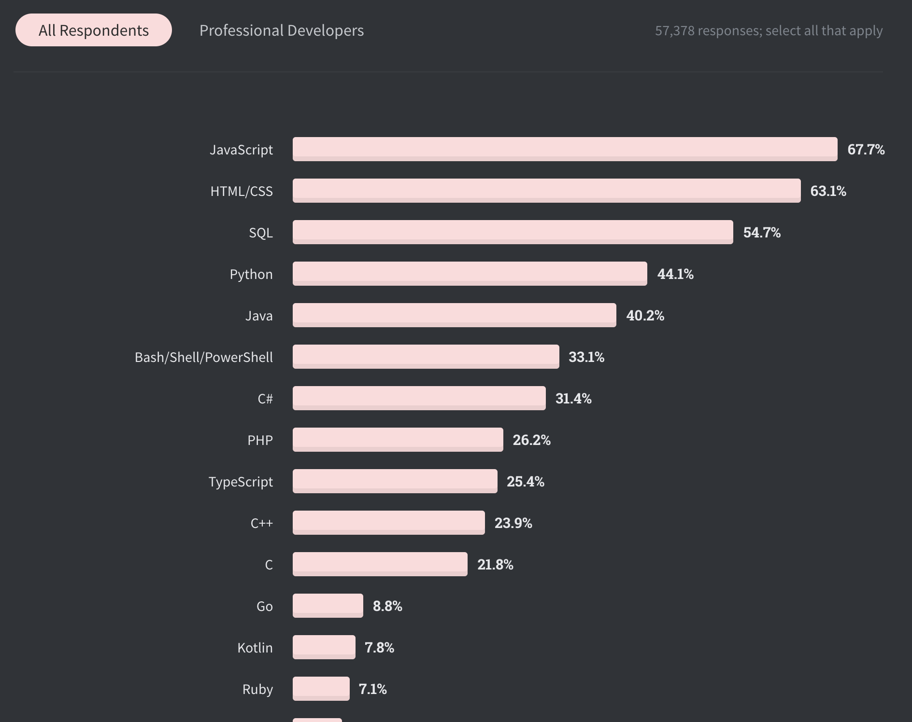
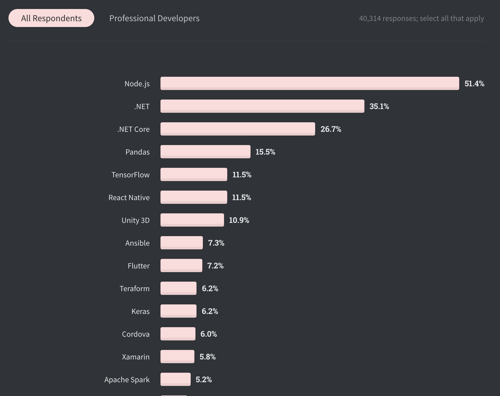
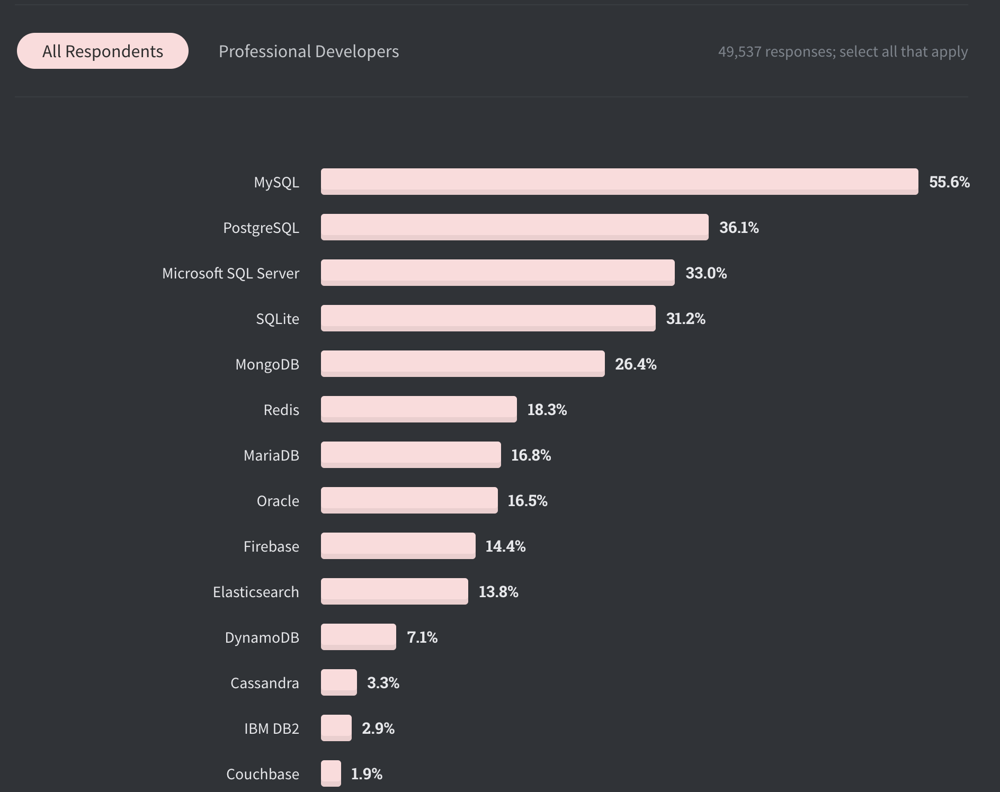

Apa itu Backend Developer?
Apa itu Backend Developer?
-
Memastikan semua fungsi berjalan dengan baik
-
Fokus pada management database
-
Membuat Restful API
-
Mengelola Server
Apa yang harus di persiapkan?
Tools


Apa yang akan dipelajari?
Apa yang akan dipelajari?


Kenapa Javascript?

Kenapa Node.js?

Kenapa MySQL?

Kenapa belajar itu semua?


Terimakasih